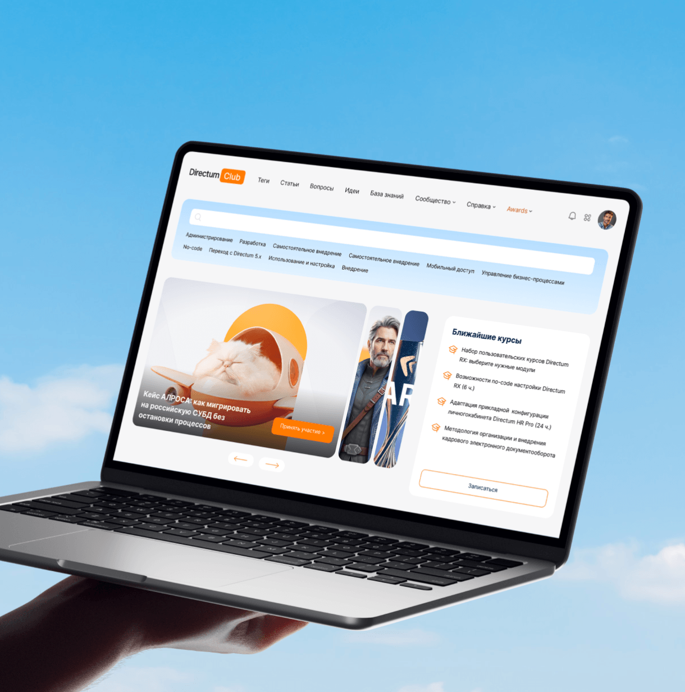

Редизайн клиентского сообщества
Редизайн с фокусом на ключевые пользовательские сценарии. На основе аналитики поведения аудитории мы усилили поиск, пересобрали информационную иерархию главной страницы и обновили визуальный язык, сохранив архитектуру второстепенных разделов и минимизировав объём разработки.
